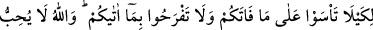
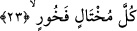

Senin elinden yumruk yemek ağzıma
Kendi elimle ekmek yemekten daha çok mutluluk verir bana
“Sevgilinin darbesi tatlıdır.” sözü Arab darb-ı mesellerindendir.
23. (Allah bunu) elinizden çıkana üzülmeyesiniz ve Allah’ın size verdiği
nimetlerle şımarmayasınız diye açıklamaktadır. Çünkü Allah, kendini beğenip
böbürlenen kimseleri sevmez.
“(Allah bunu) üzülmeyesiniz” Bunları hüzün ve eleme kapılmamanız için bir kitapta
yazıp tesbit ettiğimizi size haber verdik.
“Elinizden çıkana” yâni sıhhat, âfiyet, bolluk ve mal gibi dünya nimetlerinin elinizden
çıkması hâlinde üzülmemeniz, bunları açıklamasının bir sebebidir.
“Ve Allah’ın size verdiği nîmetlerle şımarmayasınız diye” ve onlardan Allah’ın size
verdikleriyle şımarmayasınız diye. Bu sebeple bütün nimet ve musîbetlerin önceden
takdir edilmiş olduklarını, alınan ve verilenlerin kader sonucu olduğunu bilen kimse,
yitirdiğine fazla üzülmediği gibi, sahib olduğuna da fazla sevinip şımarmaz. Çünkü elde
ettiklerinin yakında elinden çıkması takdir edilmiş olması mümkündür.
Hikmet sâhibi kişilerden birine şöyle sorulmuştu: Ey hikmet sâhibi kişi, yitirdiğine
üzülmüyor, elde ettiğine de sevinmiyorsun. Neden? O da şöyle cevap vermişti: Çünkü
giden üzülmekle telâfî yerine konmaz, sevinmekle gelenin devamı sağlanmaz. Yâni
üzüntü gideni geri getirmez, sevinmek de olmayanı yaklaştırmaz.
İbni Mes’ud (r.a.) şöyle demiştir: Benim için, yaktığını yakan ve bıraktığını bırakan
bir ateş koruna dokunmak, olmayan bir şey için “keşke olsaydı” demekten daha iyidir.
Kâşifî demiştir ki: Âyetteki ifâdeler nehiy mânâsına gelen haberlerdir. Yâni
dünyalıkların azalması sebebiyle üzülüp, dünya nîmetlerinin elde edilmesine
sevinmeyiniz. Çünkü her ikisi de geçicidir, kalıcı değil.
Bu dünya ki dilenciye versen sevinmez
Elden çıksa hiç üzülmeye değmez
Hz. Ali Murtezâ’dan (r.a.) nakledilmiştir ki: Kim bu âyetle amel ederse zühdü onu
her iki taraftan, dünyâ ve âhiret isteklerinden uzak tutar. Yâni tam bir zâhid olur.
Ne güzel söylemişlerdir:
Dünya malı göz kırparsa sevinme fazla